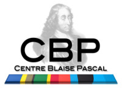

Wave Resonance and Multistability in Atmospheric Jet Dynamics¶
Coordination : Corentin Herbert, Chiabrando Nicolas (ENS-Lyon, Laboratoire de Physique)
Partners : un doctorant et plusieurs étudiants en master du Laboratoire de Physique (à recruter)
Expert analyse numérique et calcul scientifique : Cerasela Calugaru (représentant CBP/PSMN)
Abrupt transitions of the climate of the Earth are believed to have occurred in the past, and are a crucial point in the public debate about global warming. Yet, it remains virtually unknown whether the atmospheric circulation, which corresponds to the fastest timescales of the system, may undergo such transitions at the planetary scale. This project aims at putting this fundamental question on a robust scientific basis. A major challenge is that such questions involve the long-term dynamics of turbulent jets at the planetary scale: this is an outstanding problem both for theory and simulations. Indeed, while the basic mechanisms leading to the self-organization of geophysical flows into zonal jets are known, the nonlinear interplay between jets, waves and turbulence leading to their complex dynamics remains largely unexplored. Besides, running current atmospheric models with many degrees of freedom over such timescales is impossible. To help solving this issue, we propose to develop modern tools based on nonlinear dynamics and statistical physics. Specifically, we will test the hypothesis that atmospheric jet dynamics can support multiple steady-states — the conventional circulation, and a state of strong eastward jet velocities at the equator, referred to as superrotation — and that random fluctuations of the dynamics may trigger transitions between these two states. We will study how resonant excitation of equatorial waves can lead to a bifurcation of the jet, using classical geophysical fluid dynamics and new theoretical tools taking into account the turbulent character of the flow. These tools shall be applicable to broader problems in jet dynamics across a wide range of geophysical and astrophysical flows.
Contribution du CBP¶
expertise in the implementation of numerical simulations with the General Circulation Model
expertise in the use of intensive parallel computing
expertise dans la compilation optimisée du code Isca
aide au portage du code Socrates (code radiatif) dans le cadre du couplage avec le code Isca (modèle de climat)